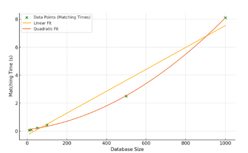
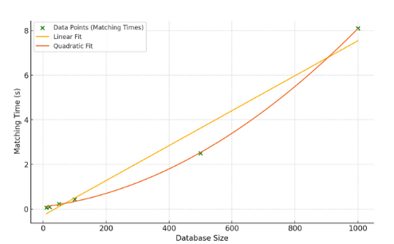

Project Summary
This project introduces a novel fingerprint recognition algorithm using a High-Density Grid-Based Matching technique. Unlike traditional methods that store an entire fingerprint image, this algorithm focuses on high-density minutiae grids, which significantly reduce the storage needed for sensitive data while improving the robustness, security, and speed of the system.
Key Highlights
- **Storage Efficiency**: Only a fraction of the fingerprint image is stored being the top seven 80x80 pixel high-density segment regions of the fingerprint. In all, reducing data storage requirements and enhancing data security.
- **Improved Security**: By only storing the high-density minutiae areas, sensitive data storage reduction mitigates risks associated with compromised biometric data.
- **Performance Gains**: Processing speed increased by 20-30% due to optimized focus on critical regions of the fingerprint.
 

Research Contribution
The research paper for this project, "High-Density Grid-Based Matching Versus Global Matching," follows the IEEE format and provides a detailed methodology, results, and comparative analysis. The algorithm demonstrates improved processing efficiency and security, making it a viable solution for real-world biometric systems.
View the Research Paper